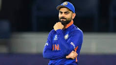

Virat Kohli
Working professional in Indian Cricket Team.
contact details
Virat Kohli (born 5 November 1988) is an Indian international cricketer
and former captain of the India national cricket team.
He plays for Delhi
in domestic cricket and Royal Challengers Bangalore in the Indian Premier
League as a right-handed batsman.
Youth and domestic career
- Delhi
- Kohli first played for Delhi Under-15 team in October 2002 in the 2002–03 Polly Umrigar Trophy
- He became the captain of the team for the 2003–04 Polly Umrigar Trophy.
- In late 2004, he was selected in the Delhi Under-17 team for the 2003–04
Vijay Merchant Trophy
- India Under 19
- In July 2006, Kohli was selected in the India Under-19 squad on its tour of England
- He averaged 105 in the three-match ODI series against England Under-19s and 49 in the three-match Test series.
- India Under-19 went on to win both the series.
International career
- Initial career
- In August 2008, Kohli was included in the Indian ODI squad for tour of Sri Lanka and the
Champions Trophy in Pakistan
- Prior to the Sri Lankan tour, Kohli had played only eight List A matches
- international debut, at the age of 19, in the first ODI of the tour and was dismissed for 12
- He made his first ODI half century, a score of 54, in the fourth match
- He had scores of 37, 25 and 31 in the other three matches
- ndia won the series 3–2 which was India's first ODI series win against Sri Lanka in Sri Lanka.
Stats
| Years |
Runs |
| 2008 |
150 |
| 2009 |
325 |
Skills
| Batting ⭐⭐⭐⭐⭐ |
Bowling ⭐⭐ |
| Fielding ⭐⭐⭐⭐ |
Captancy ⭐⭐⭐⭐ |